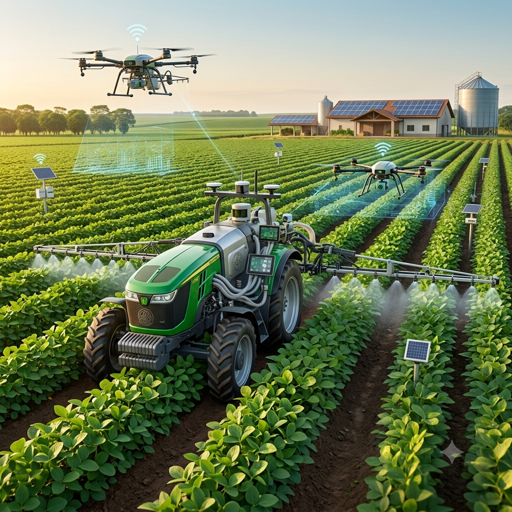
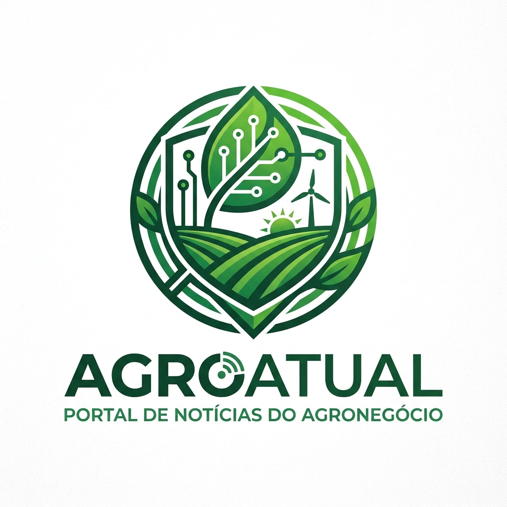
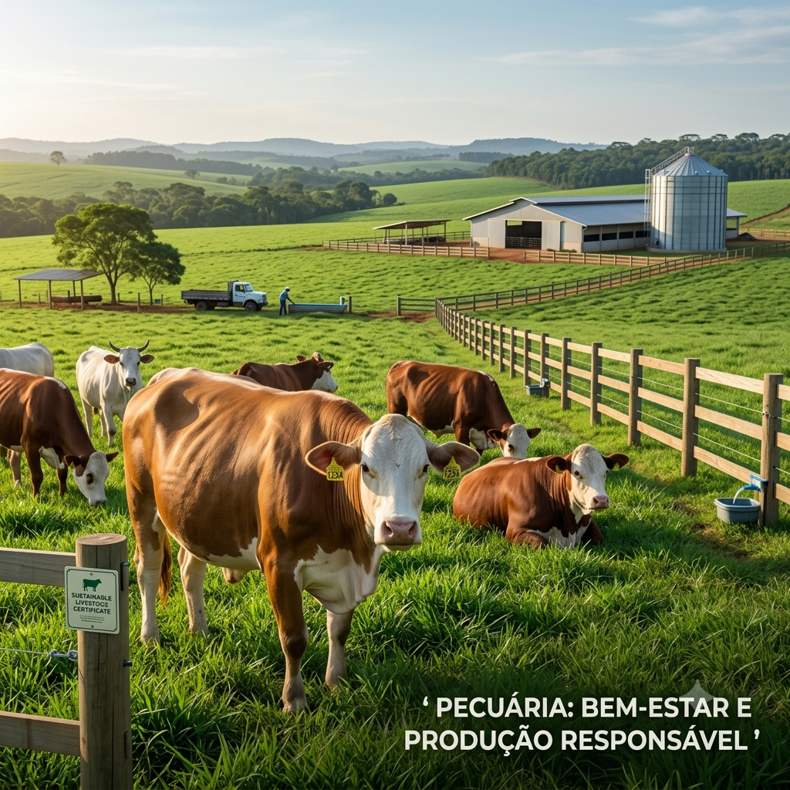
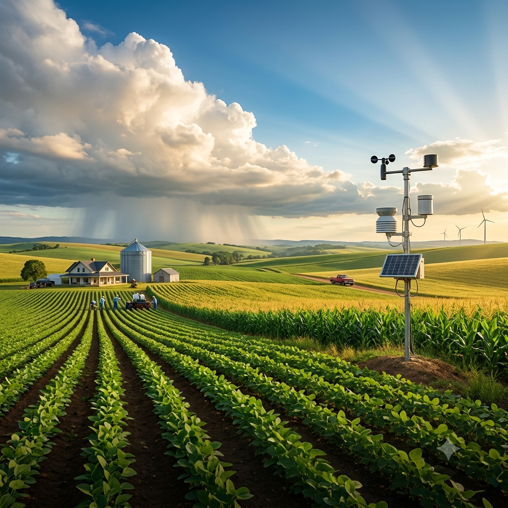
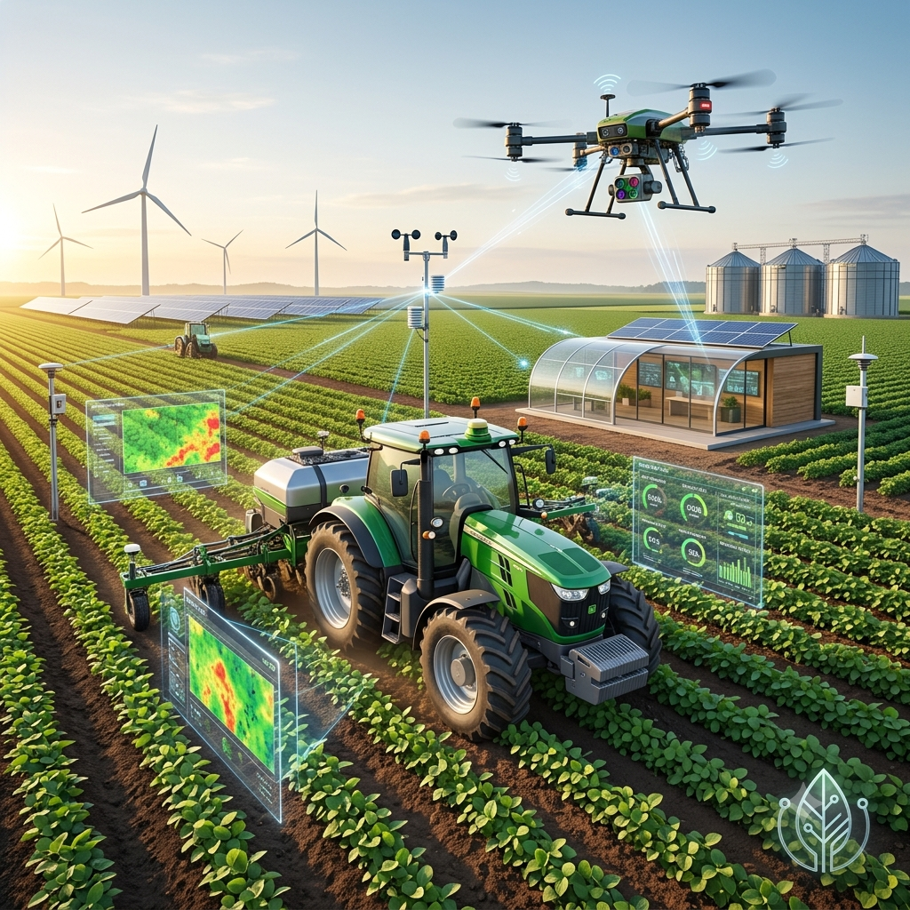
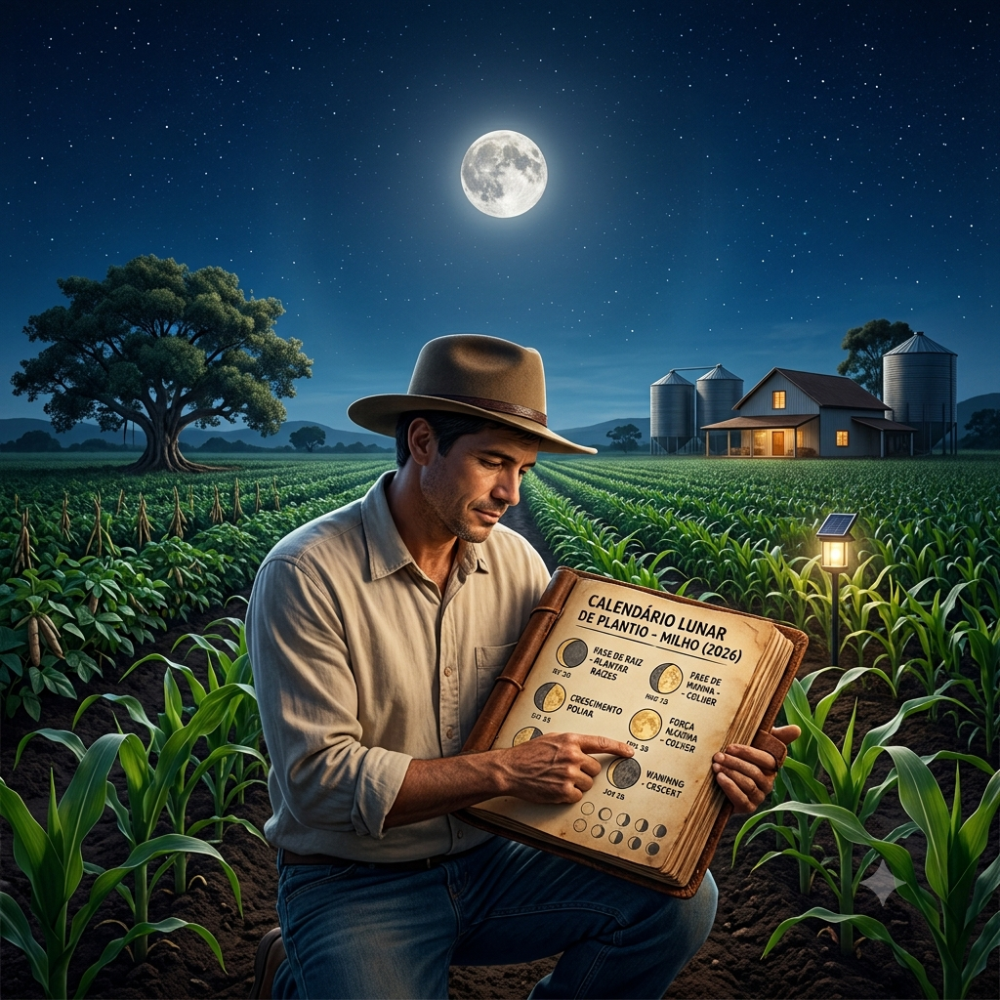

Agricultura
Notícias e informações sobre o manejo agrícola e as principais culturas do campo.
- Plantações
- Milho
- Soja
- Feijão
- Manejo agrícola

Informação que fortalece o campo.
Confira as principais categorias de notícias do agronegócio

Notícias e informações sobre o manejo agrícola e as principais culturas do campo.

Tudo sobre criação de gado, produção de leite e bem-estar animal.

Acompanhe a previsão do tempo e os fenômenos climáticos que afetam a produção rural.

Máquinas, drones e inovações que estão transformando o campo.

Conhecimentos tradicionais sobre as fases da lua aplicados ao plantio, sempre considerando que solo, clima e manejo também influenciam a produção.